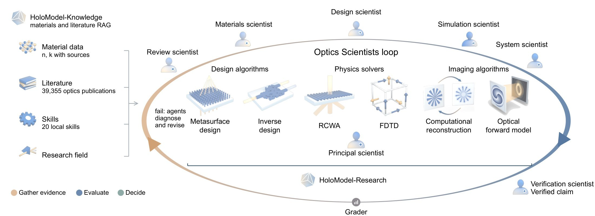
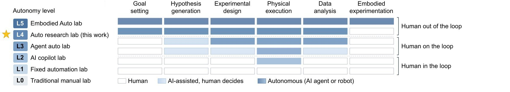
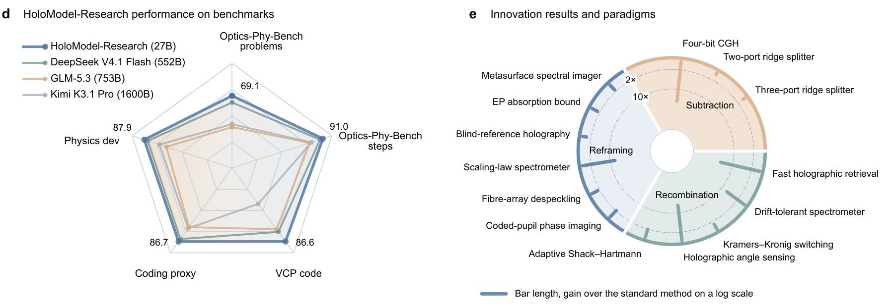
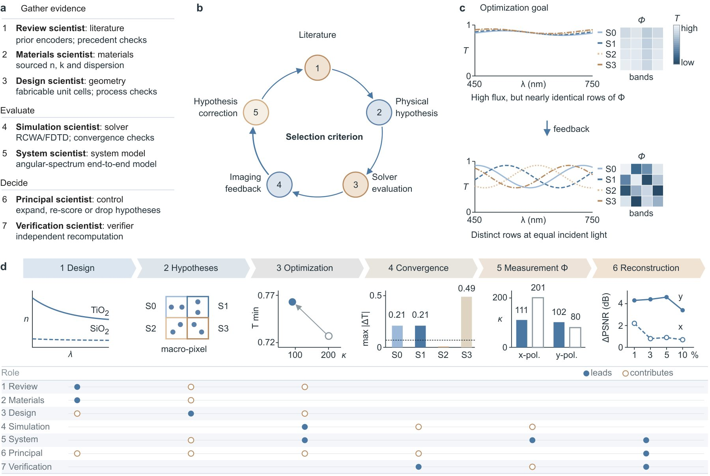
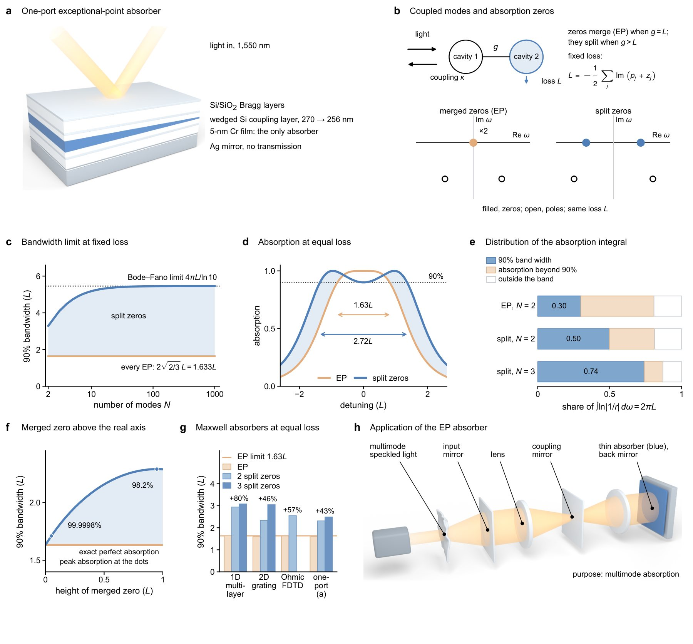
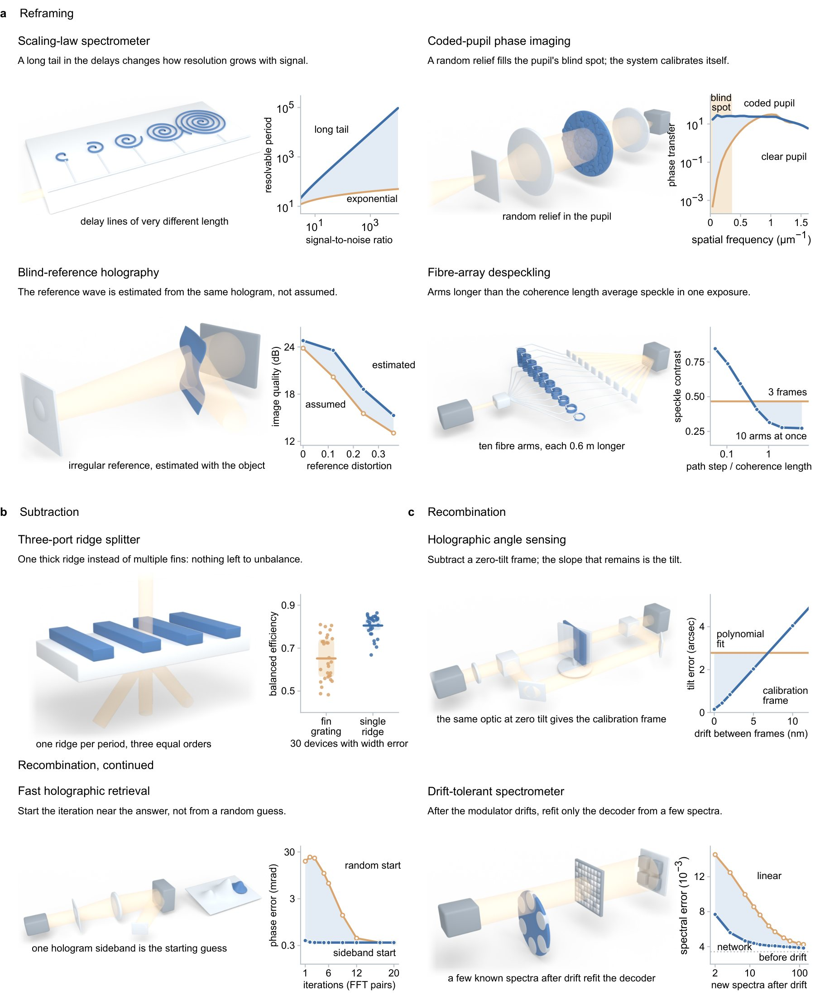

Agentic Optics Scientists
HoloToken is a team of AI scientist agents that carries open-ended optics research from the literature to physics-verified results. It runs on domain post-trained models that fit on a single graphics card, so the research stays open to scrutiny, can be reproduced, and can run where the data cannot leave the laboratory.

Videos
Each video follows one discovery through the five-step loop, showing which agent works at each step and what it adds to the research record.
The agents correct their own objective and arrive at TiO₂ pillar dimers.
From a theory question to a sharp bound and a proposed test structure.
System
The agents mined open problems from the optics literature, proposed ideas for them, and screened and verified those ideas at scale. At every stage, a check outside the control of the proposing agents decides which candidates go on.

Models
Two models post-trained from the same 27-billion-parameter base, Qwen3.8-27B, run the agents. HoloModel-Research writes the research code; HoloModel-Knowledge supplies source-grounded optics knowledge.
Post-trained by reinforcement learning on verified rewards. Scores highest on all five in-house benchmarks, ahead of DeepSeek V4.1 Flash (552B), GLM-5.3 and Kimi K3.1 Pro.
Optics-Phy-Bench turns 217 papers from leading optics journals into multi-step computations; a problem counts only when every step reproduces the published value.
The knowledge model of the system, trained on 39,355 optics publications. It supplies the agents with material data and with evidence linked to its source passages.
On eight computational-imaging tasks, the agent team solved up to 8 of 8 against 5 for a general-purpose agent framework, using 3.4- to 10-fold fewer tokens.

Discoveries
Two discoveries are followed in depth: a device whose objective the agents corrected themselves, and a theorem in optical absorption.
Given only a request to advance research in this area, the agents first pursued high transmission. Their own imaging feedback showed that the bright cells responded almost identically across the spectrum, so the principal scientist replaced the objective with distinct spectral responses at equal incident light.
TiO₂ pillar dimers at four orientations halve the condition number of the sensing matrix from 201 to 94; independent verification confirmed the design on eight unseen test scenes.

Merging absorption zeros at an exceptional point is widely pursued for broadband absorption. The agents proved that, at equal intrinsic loss L, a perfectly absorbing exceptional point of any order cannot exceed
Splitting the zeros instead reaches 2.720 L with two modes. Part of this result is machine-checked in Lean 4.

Bar length on a logarithmic scale. Each method is compared with the strongest tuned standard method it names, in accuracy, performance, or speed at equal or lower error.

Verification
Every result enters the research record with its evidence, and an independent verification agent recomputes it at higher fidelity before it leaves the loop. For theory, we go one step further and check proofs with a machine.
The verification scientist recomputes the selected designs with code and settings the proposing agents did not control: higher Fourier-order convergence tests, sensing-matrix conditioning, and reconstruction on unseen test scenes. Rigorous solver rechecks set the operating conditions of each device claim.
cd HoloToken/lean/EPAbsorber lake exe cache get && lake build